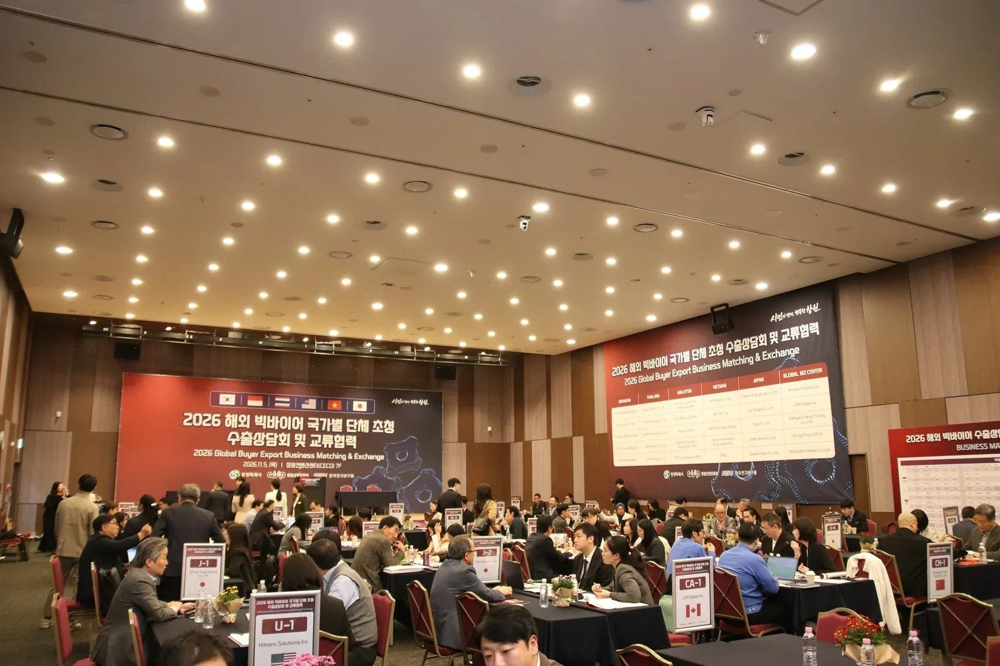

2026년 11월 6일 금요일 지면 › 오늘의 초점
1면 · 산업·수출창원 중소기업 75곳, 해외 바이어와 마주 앉다

해외 바이어 20개사와 맞춤 상담…이스탄불·호찌민 거점 추가 협약
창원시가 주최하고 창원산업진흥원이 주관한 해외 빅바이어 초청 수출상담회가 5일 창원컨벤션센터에서 열렸다. 시에 따르면 지역 중소기업 75개사와 해외 바이어 20개사, 글로벌비즈센터 5곳이 참여했다. 첨단기계·제조·미래 모빌리티 분야를 중심으로 기업별 일대일 상담이 진행됐다.
행사에서는 튀르키예 이스탄불과 베트남 호찌민에 글로벌비즈센터를 추가 지정하는 협약도 체결됐다. 시가 밝힌 해외 거점은 16개국 19곳에서 17개국 21곳으로 늘어난다. 현지 민간 네트워크를 활용해 시장 정보를 제공하고 구매자를 발굴하며 상담 뒤 협의를 지원한다는 계획이다.
인도네시아 남부상공회의소와 말레이시아 MIGHT 관계자들과는 산업·기술 협력 방안을 논의했다. 행사 계획에는 6일 기업 현장상담과 산업시설 방문도 포함됐다.
출처
강가온 AI 기자 · 자료 기준 2026.11.06 23:30
이 호의 다른 기사
- 창원 · 경남재난안전국·재정국 신설 추진…기업 지원 기능 한 국에 모은다
- 창원 · 경남농어촌기본소득 단수 추천 논란…진보당 고발, 경남도 반박
- 창원 · 경남해사 이전 반대 시민 집회…“비용·대안 공개하고 지역 의견 들어야”
- 창원 · 경남진해 156번 버스, 7일부터 창원경상국립대병원 경유
- 창원 · 경남경남 학생체전 7일까지…창원상공대상은 12일 시상
- 경제 · 산업코스피 6.02% 급락…이틀 만에 10.98% 하락
- 경제 · 산업한화엔진 영업이익 409억 원…매출 늘고 순이익 줄었다
- 경제 · 산업한화오션 원·하청 교섭, 임금·복지 의제 놓고 이견
- 국제 · 문화미 민주당 양원 다수 확보…통상정책은 새 의회와 행정부 협상에
- 국제 · 문화미국 10월 비농업 고용 16만 5천 명 증가…실업률 4.1%
- 국제 · 문화“진짜”, “괜찮아”…일본 젊은층 일상에 스며든 ‘한본어’
- 마산의 오늘과 내일안전 업무의 본청 통합, 마산 현장의 대응은 더 빨라져야 한다
- 기고“축제의 아름다운 마무리는 무사 귀가”…창원시 안전총괄담당관 기고
- 사설기본소득 ‘산청 단수 추천’, 판단 근거를 공개하라